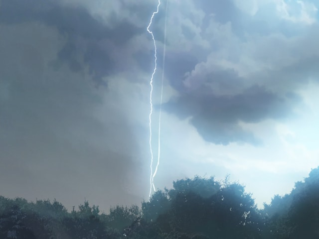

Forecast for the Franklin, Greenville and Springfield area.
Watercolor sky
awaits the painter’s last touch
Just before sunrise.

Gray clouds clash above With the sound of crashing surf Summer thunderstorm. January thaw
A thick line of dark gray clouds
Recedes like the tide.Skyline emerging
Grays of clouds too light for rain
make the steeple popsomewhere in their peaks
mountains covet their secrets
winds cannot whisperShe soaks up the rain
with arms outstretched, finding bliss
in nature's baptism